从浅层到深度：特征表征之路
授课教师：王兴刚 · 华中科技大学
本讲（上）关注：表征如何被获得和评价？
视觉系统的核心不是分类器，而是把像素变成“好用的表征”。
- 手工设计特征：SIFT、HOG 及其局限
- 浅层特征学习：PCA、稀疏编码、中层模式挖掘
- 深度表征：CNN 内部学到了什么
- 降低标注依赖之一：迁移学习与半监督学习
- 降低标注依赖之二：自监督学习（对比学习、掩码建模）—— 见第 3 讲（下） SimCLR MAE
学完本讲（上），你应该能判断一种表征是否好用
- 1手工特征、监督表征、迁移学习和自监督学习，信息分别从哪里来？
- 2面对平移、颜色、裁剪等变化，哪些应该忽略，哪些必须保留？
- 3面对一个新任务，线性探针、部分微调还是全量微调，该怎么选？
- 4为什么线性探针不够？还应怎样验证表征对真实下游任务有用？
SIFT：尺度不变特征变换

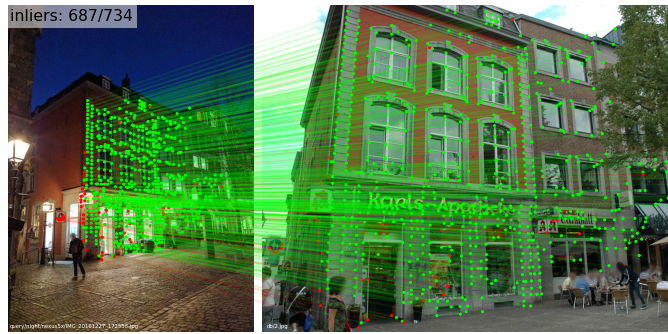
HOG：方向梯度直方图
- 用局部梯度方向直方图描述形状：cell 内统计梯度方向 → block 内归一化 → 按空间网格拼接
- 直觉：不追踪精确的边缘坐标，但保留局部区域中的梯度方向分布——得到带粗粒度位置信息的形状素描
- 经典组合：HOG + SVM——手工特征 + 浅层分类器
- 行人检测的里程碑工作（Dalal & Triggs, 2005）
- 行人相对刚性，适合用模板表达
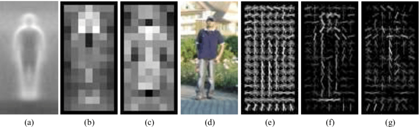
HOG + SVM 行人检测
- 典型范式：浅层特征 + 浅层分类器
- 检测流程：滑动窗口扫描 → 每个窗口提取 HOG → SVM 打分
- 在 EPFL / PETS2009 数据集上效果良好
- 但模板固定，难以应对复杂变化
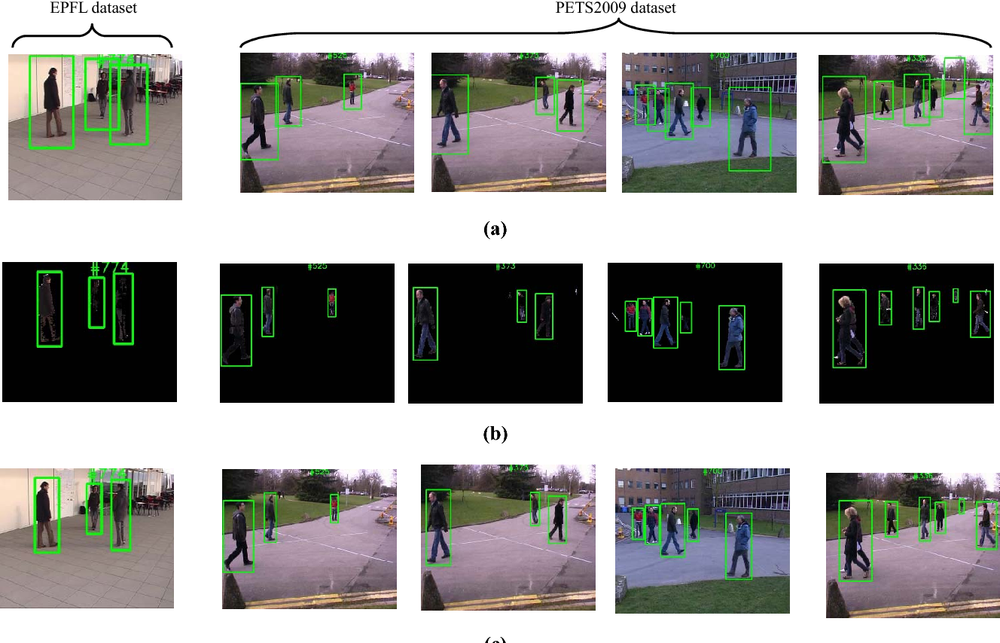
手工特征不够鲁棒：真实变化往往超出设计假设
关键点或轮廓被挡住，描述子可能找不到稳定对应。
阴影、曝光和局部反光会改变梯度与对比度。
非刚体形变或姿态变化会破坏固定模板的匹配。
超出预设范围的透视与尺度变化仍会改变局部结构。
不如让机器从数据中学习表征。
本章小结：手工特征时代
关键点 + 梯度方向直方图描述子，尺度 / 旋转不变，擅长图像匹配。
关键术语：尺度不变、描述子
方向梯度直方图刻画形状，配 SVM 做行人检测，是“手工特征 + 浅层分类器”的经典范式。
关键术语：模板、滑动窗口
不变性靠人工假设，在遮挡、光照、姿态、视角、尺度剧变的开放世界中不够鲁棒 → 特征应当从数据中学。
LeCun 的蛋糕：自监督才是主体
- 纯强化学习 = 樱桃：偶尔的几个比特奖励
- 监督学习 = 糖霜：每样本 10~10,000 比特
- 无监督 / 预测学习 = 蛋糕主体：每样本数百万比特
- “比特”指标签携带的信息量——人工标签的信息远远少于数据本身
- 智能的大部分来自对世界的预测式学习
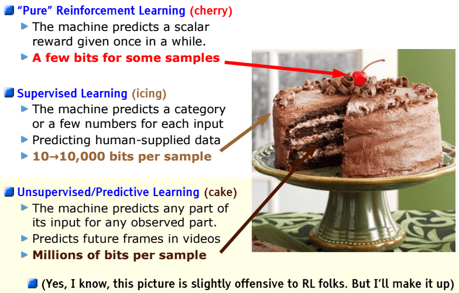
好的表征应具备哪些性质？
去除冗余，用更少维度表达有效信息。
没有丢掉完成下游任务所需的关键因素。
姿态、光照等变化尽量由不同因素解释。
人能理解维度、方向或区域与语义的关系。
不变性与等变性：要保留什么，取决于任务
| 输入变化 | 分类任务希望 | 定位 / 几何任务希望 |
|---|---|---|
| 物体在图像中平移 | 近似不变：仍判断为同一类别 | 等变：预测位置应随之移动 |
| 水平翻转 | 多数自然物体分类可保持类别 | 文字、交通方向和左右解剖结构可能改变语义 |
| 颜色改变 | 形状主导的类别可适度忽略 | 细粒度识别、病理和材料检测可能必须保留 |
| 裁剪或遮挡 | 可容忍非关键区域缺失 | 过强裁剪会删除目标或几何关系 |
如何评估一种表征学习方法？
'/><rect x='250' y='150' width='200' height='100' rx='10' fill='%23fbece4' stroke='%23c2521e' stroke-width='2'/><text x='350' y='188' font-size='19' text-anchor='middle' fill='%2322222a' font-family='sans-serif'>Pretext task</text><text x='350' y='212' font-size='15' text-anchor='middle' fill='%23666' font-family='sans-serif'>self-supervised</text><text x='350' y='234' font-size='15' text-anchor='middle' fill='%23666' font-family='sans-serif'>pretraining</text><path d='M455 200 L505 200' stroke='%2322222a' stroke-width='3' marker-end='url(%23a)'/><rect x='510' y='150' width='200' height='100' rx='10' fill='%23e8eefb' stroke='%232456d6' stroke-width='2'/><text x='610' y='188' font-size='19' text-anchor='middle' fill='%2322222a' font-family='sans-serif'>Encoder fθ</text><text x='610' y='212' font-size='15' text-anchor='middle' fill='%23c2521e' font-family='sans-serif'>frozen</text><text x='610' y='234' font-size='15' text-anchor='middle' fill='%23666' font-family='sans-serif'>the learned representation</text><path d='M715 200 L765 200' stroke='%2322222a' stroke-width='3' marker-end='url(%23a)'/><rect x='770' y='120' width='210' height='160' rx='10' fill='white' stroke='%232456d6' stroke-width='2.5'/><text x='875' y='152' font-size='18' text-anchor='middle' fill='%232456d6' font-family='sans-serif' font-weight='bold'>Evaluate downstream</text><text x='875' y='182' font-size='15' text-anchor='middle' fill='%2322222a' font-family='sans-serif'>linear probe / k-NN</text><text x='875' y='206' font-size='15' text-anchor='middle' fill='%2322222a' font-family='sans-serif'>few-shot / fine-tune</text><text x='875' y='230' font-size='15' text-anchor='middle' fill='%2322222a' font-family='sans-serif'>detection / segmentation</text><text x='875' y='258' font-size='14' text-anchor='middle' fill='%23666' font-family='sans-serif'>with few labels</text><text x='500' y='330' font-size='16' text-anchor='middle' fill='%23666' font-family='sans-serif'>What matters is not pretext accuracy, but whether the encoder makes downstream tasks easier.</text><defs><marker id='a' markerWidth='8' markerHeight='8' refX='7' refY='4' orient='auto'><path d='M0 0 L8 4 L0 8 z' fill='%2322222a'/></marker></defs></svg>)
生物视觉的层级表征
- 视觉皮层逐级抽象：V1/V2 → V4 → PIT/AIT
- 从边缘、纹理到部件、完整物体
- 深度网络的层级设计正是受此启发（如 HMAX 类皮层模型）
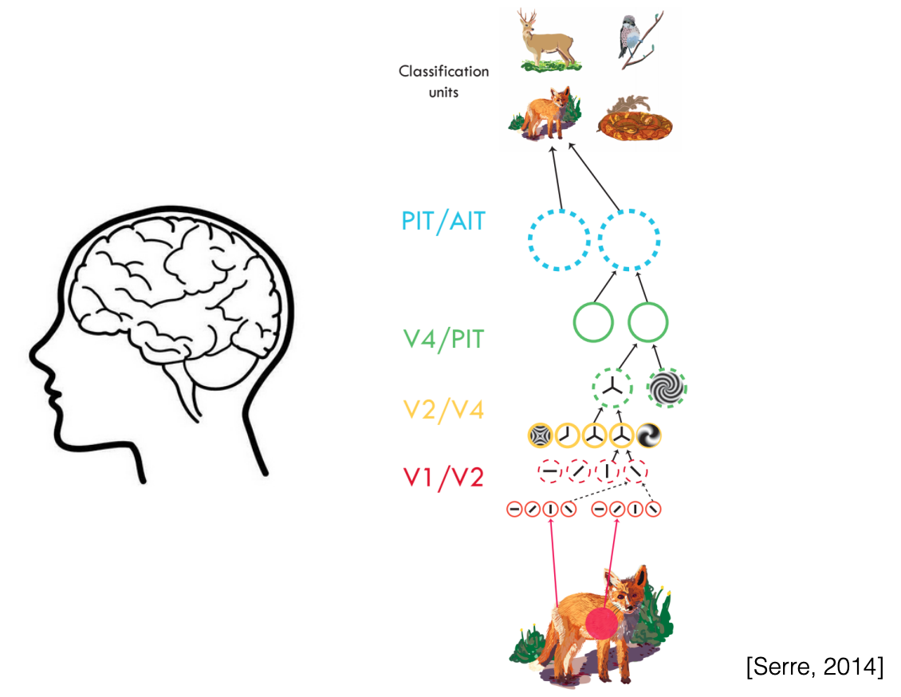
本章小结：什么是好的表征
紧凑、充分等性质可作参考；应对无关变化保持不变，对位置等任务变量保持等变。
不看代理任务精度，而要检查表征能否让分类、检索、密集预测等实际下游任务变容易。
LeCun 蛋糕（信息量比喻）：自监督的信息量远大于监督；生物视觉的层级抽象启发了深度网络设计。
PCA：学习一组本征基向量
- 寻找数据方差最大的一组正交基（本征表示）
- 直觉：给高维数据找“主轴”，保留数据变化最大的方向
- 以重建 / 压缩为目标的线性降维
- 第一个本征脸对应最大方差方向，依次递减
- 数据驱动，但只是线性、浅层的变换
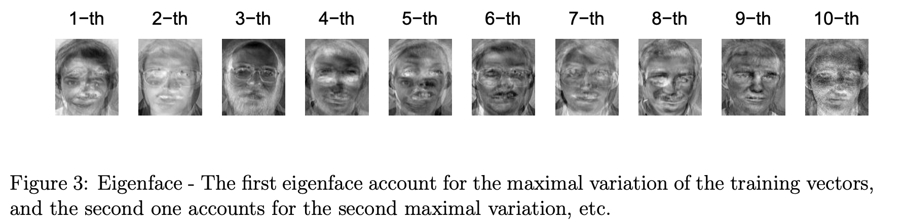
PCA 人脸重建：保留了什么，丢了什么？
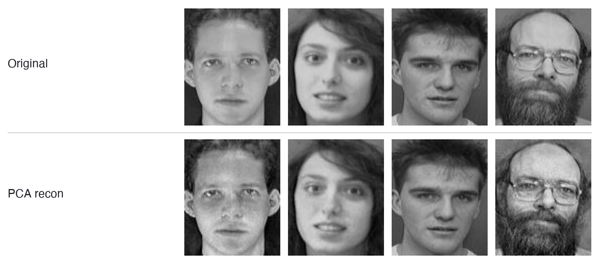
稀疏表示：字典上的稀疏组合
- 测试样本 = 训练字典的稀疏线性组合 + 稀疏误差
- 求解 L1 最小化：min ‖x‖₁，s.t. Ax = y
- 直观理解：用尽可能少的训练样本拼出测试样本，因此大部分系数为零
- 遮挡 / 噪声被建模为稀疏误差项，因此对它们很鲁棒
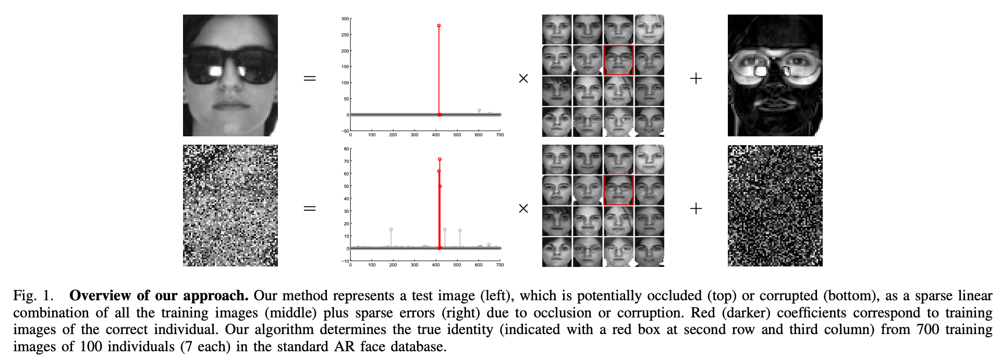
经典目标识别流水线
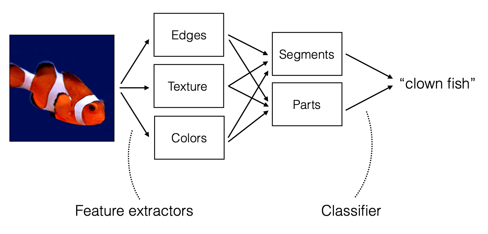
多示例学习（MIL）
- 标注以“包”为单位：正包至少含一个正实例
- 负包中所有实例都是负例
- 类比：一袋糖果里只要有一颗是草莓味，整袋就标为“草莓包”
- 适合弱标注：图像级标签 → 挖掘区域级概念
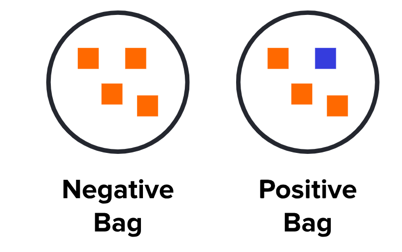
挖掘有判别力的中层视觉模式
- 用多示例学习从图像块中挖掘判别性模式（G-code）
- 聚类 + 空间金字塔，汇聚成整图表征
- MIT Indoor 67 场景分类准确率 50.15%，当时最优
- Wang et al., MMDL, ICML 2013
- 局限 / 失败条件：假设判别性图像块能被聚类稳定挖掘——类别内差异大、背景主导或模式不重复出现时，模式挖掘会失效，且流水线各环节的误差逐级累积
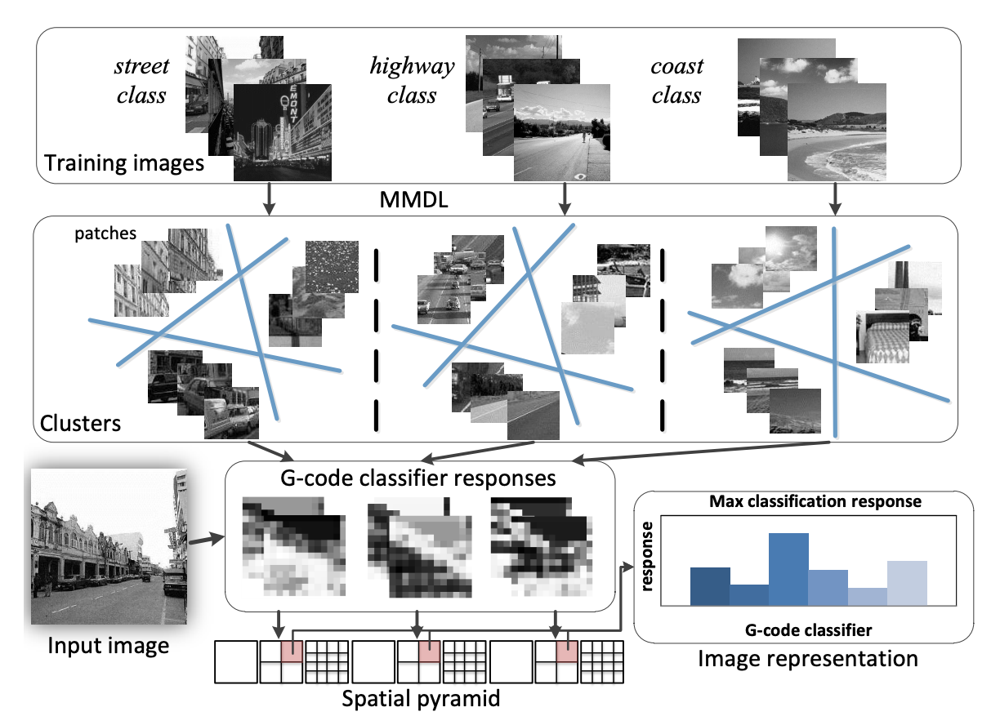
本章小结：浅层特征学习
以重建为目标的线性降维：找方差最大的正交基。局限：无法表达非线性结构。
测试样本 = 字典的稀疏组合 + 稀疏误差；L1 最小化求解；对遮挡 / 噪声鲁棒。
多示例学习（MIL）从弱标注中挖掘判别性图像块模式，聚类 + 空间金字塔汇聚成整图表征。
特征开始“学”了，但流水线仍靠人工串联——为端到端深度学习埋下伏笔。
深度学习：一切模块皆可学习
- 不再手工设计任何模块
- 边缘 / 纹理 / 部件 / 分类器全部从数据中学
- 整个流水线端到端联合优化
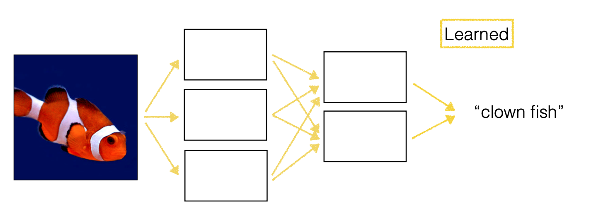
CNN 第一层学到什么？
- 第一层自发学到类 Gabor 的边缘与颜色滤波器
- Gabor 滤波器是手工时代的经典边缘检测器——CNN 自己“重新发明”了它
- 可视化方法：寻找使某滤波器响应最强的图像块
- 与手工特征时代的边缘检测器惊人相似
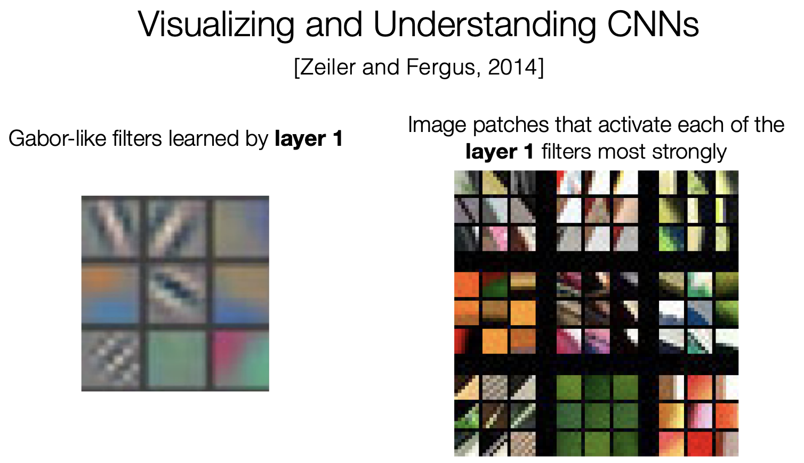
CNN 逐层抽象：从纹理到物体
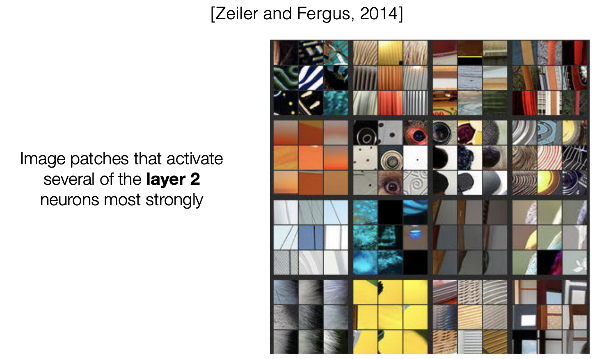
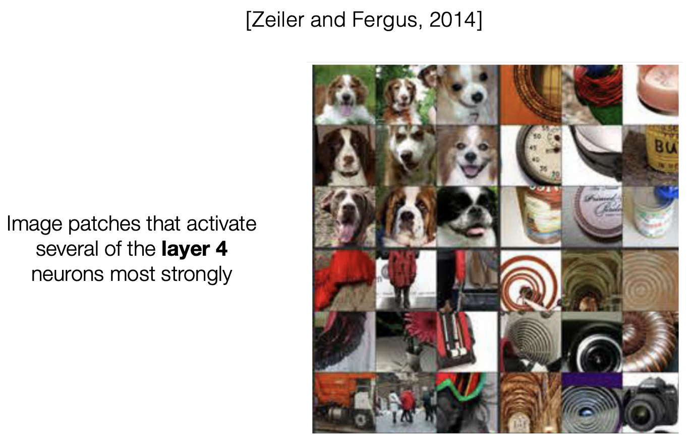
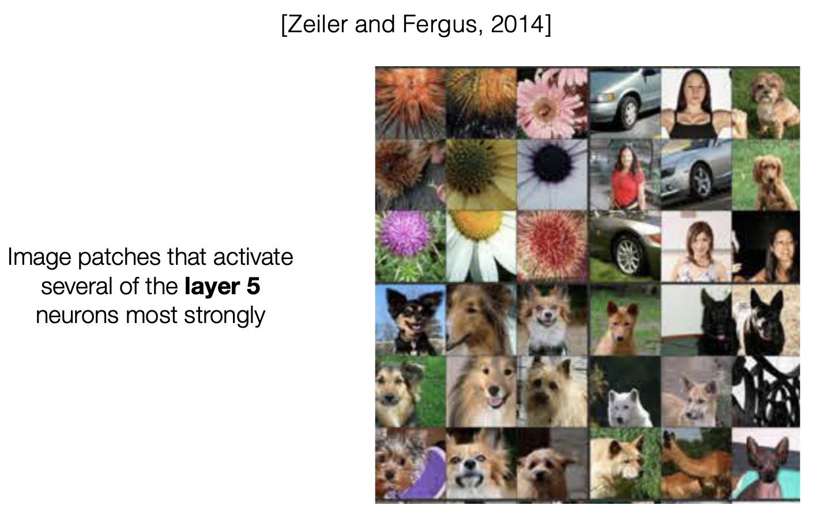
CNN “学会”了经典识别流水线
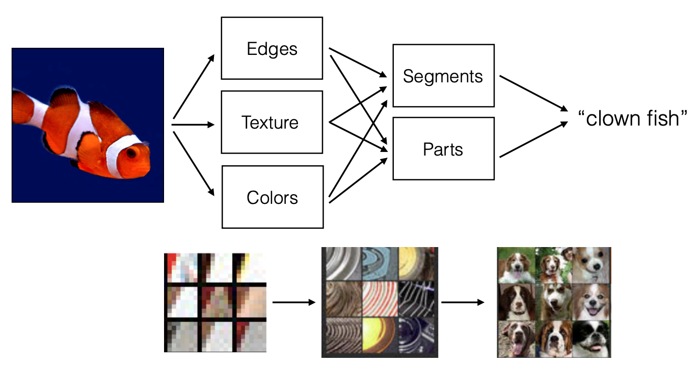
本章小结：深度表征学习
所有模块可学习，同一损失联合优化——手工流水线被整体取代。
关键术语：end-to-end
可视化显示：网络自发形成 边缘 → 纹理 → 部件 → 物体 的层级结构，与生物视觉和经典流水线对应。
强监督学到好表征，但依赖海量人工标注——引出后续的迁移 / 半监督 / 自监督。
但代价是海量人工标注。
预训练 → 微调 → 测试
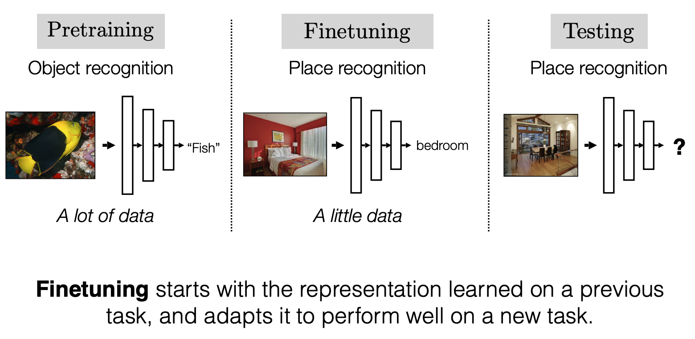
微调实践：迁移的是“权重”
“好的表征让后续的学习任务更容易。”—— Goodfellow et al.,《Deep Learning》, 2016
- “学到的表征”具体就是网络的权重与偏置
- 保留骨干网络，替换最后的分类头
- 新任务只需少量标注即可达到好效果
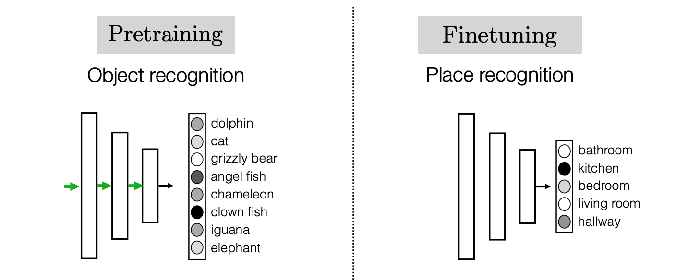
实践指南：线性探针、部分微调，还是全量微调？
| 策略 | 什么时候选 | 冻结与学习率怎么设 | 典型风险 |
|---|---|---|---|
| 线性探针（全部冻结） | 标注极少（几十~几百张）；或目的是公平比较预训练表征 | 编码器全冻结，只训练线性头；正常学习率即可 | 对非线性任务欠拟合——低分不代表特征里没有信息 |
| 部分微调（解冻后几层） | 中等标注量；源域与目标域比较接近 | 冻结底层（通用边缘纹理），解冻高层；高层用 1/10 学习率，新分类头可正常 | 解冻层数过多 → 小数据上过拟合 |
| 全量微调 | 标注较充足，或目标域与源域差异大（如医学影像、遥感） | 全网小学习率（如 1e-4），分类头可大 10 倍；配合较强增广 | 灾难性遗忘、过拟合；小数据上慎用 |
监督学习的代价：标签从哪来？
- 监督学习 = 图像 X + 人工标签 Y
- 每一个标签背后都是人工标注的成本
- 标注昂贵、规模受限——能否利用海量无标注数据？
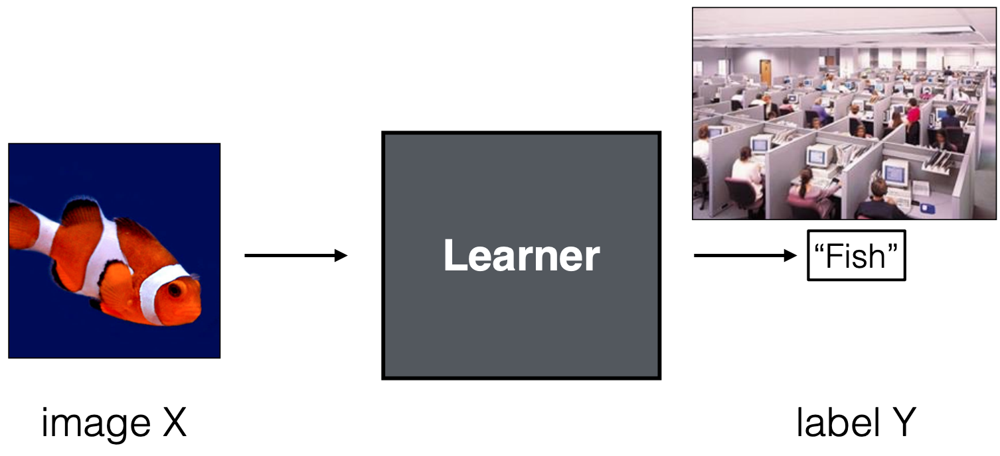
异构网络之间的知识迁移
- 知识不仅跨任务迁移，还能跨网络结构迁移
- 在深度 / 宽度 / 卷积核三个级别做参数重映射
- 架构适配总成本较 DPC 降低约三个数量级
- Fang et al., FNA++, IEEE TPAMI 2021
- 局限 / 失败条件：假设异构架构间存在可学习的参数映射——结构差异过大、或源任务与目标任务差距太大时，重映射收益消失，仍需重新训练或搜索
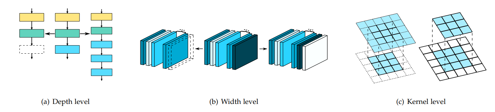
本章小结：迁移学习
大数据集上预训练，小数据集上微调：迁移的是权重，保留骨干、替换分类头。
线性探针 / 部分微调 / 全量微调按标注量与域差距选择；一次只改一个因素做对照。
知识还能跨网络结构迁移（如 FNA++ 的参数重映射），但预训练仍依赖人工标注。
半监督学习：伪标签
- 设定：少量标注数据 + 大量无标注数据
- 用当前模型为无标注数据生成伪标签
- 在“标注 + 伪标注”数据上重新训练，迭代提升
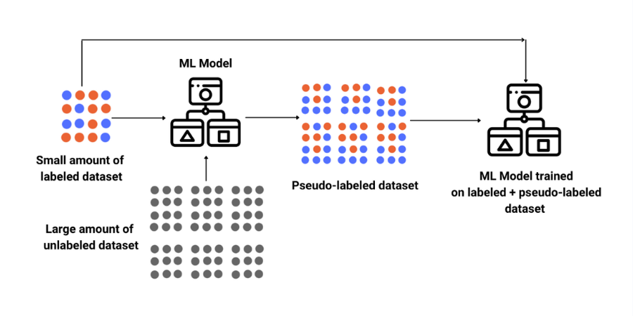
FixMatch：弱增广出标签，强增广学一致
- 弱增广图像的预测超过阈值 → 转化为 one-hot 伪标签
- 强增广图像的预测与伪标签计算交叉熵
- 核心：同一语义的不同视图应有一致预测
- Sohn et al., NeurIPS 2020
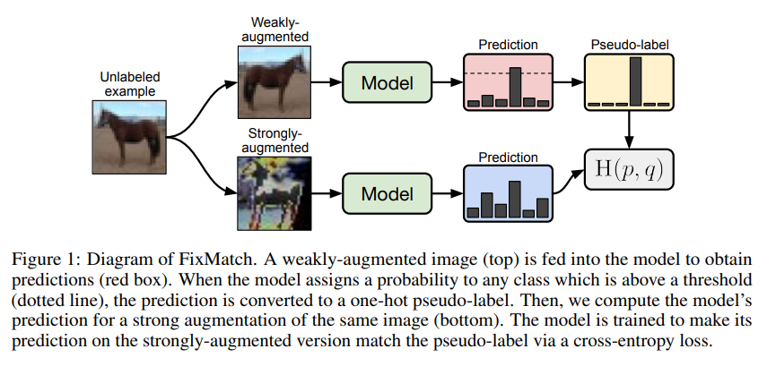
Mean Teacher：师生一致性
- 学生网络正常梯度训练
- 教师网络 = 学生参数的指数滑动平均（EMA）
- θ′t = αθ′t−1 + (1−α)θt，α 接近 1（如 0.99），教师变化缓慢
- 直观理解：教师是学生参数的长期平均，因此提供的学习目标更稳定
- Tarvainen & Valpola, NeurIPS 2017
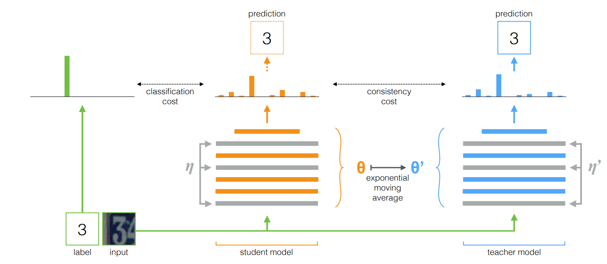
本章小结：半监督学习
模型自己给无标注数据“造”标签再自训；陷阱是确认偏差，需置信度阈值。
弱增广出标签、强增广学一致，把伪标签与一致性正则统一到一个框架。
教师 = 学生参数的 EMA，目标更稳定；一致性假设贯穿所有半监督方法。
回到开场：判断表征是否好用，先回答这四件事
| 开场问题 | 现在应能给出的回答 |
|---|---|
| 1 · 学习信号 | 区分人工设计、人工标签、预训练权重和数据内部关系分别提供了什么信息。 |
| 2 · 保留与忽略 | 对任务无关变化保持不变；对位置、方向或细粒度属性等任务变量保留响应，必要时保持等变。 |
| 3 · 微调策略 | 按标注量与源域差距选择线性探针、部分微调或全量微调；一次只改一个因素，警惕负迁移。 |
| 4 · 评价协议 | 线性探针只看线性可分性；还要按用途检查检索、少样本微调、密集迁移、跨域表现和失败样例。 |
当标注真正稀缺时，
数据本身就是监督信号。
参考文献（附录）：手工特征 · 浅层与深度表征 · 弱监督
- Distinctive Image Features from Scale-Invariant Keypoints. Lowe. IJCV 2004.
- Histograms of Oriented Gradients for Human Detection. Dalal & Triggs. CVPR 2005.
- Eigenfaces for Recognition. Turk & Pentland. Journal of Cognitive Neuroscience 1991.
- Robust Face Recognition via Sparse Representation. Wright, Yang, Ganesh, Sastry, Ma. IEEE TPAMI 2009.
- Max-Margin Multiple-Instance Dictionary Learning. Wang, Wang, Bai, Liu, Tu. ICML 2013.
- Representation Learning: A Review and New Perspectives. Bengio, Courville, Vincent. IEEE TPAMI 2013.
- Robust Object Recognition with Cortex-Like Mechanisms. Serre, Wolf, Bileschi, Riesenhuber, Poggio. IEEE TPAMI 2007.
- Visualizing and Understanding Convolutional Networks. Zeiler & Fergus. ECCV 2014.
- Deep Learning. Goodfellow, Bengio, Courville. MIT Press 2016.
- FNA++: Fast Network Adaptation via Parameter Remapping and Architecture Search. Fang, Sun, Zhang, Peng, Li, Liu, Wang. IEEE TPAMI 2021.
- Mean Teachers Are Better Role Models: Weight-Averaged Consistency Targets Improve Semi-Supervised Deep Learning Results. Tarvainen & Valpola. NeurIPS 2017.
- FixMatch: Simplifying Semi-Supervised Learning with Consistency and Confidence. Sohn et al. NeurIPS 2020.